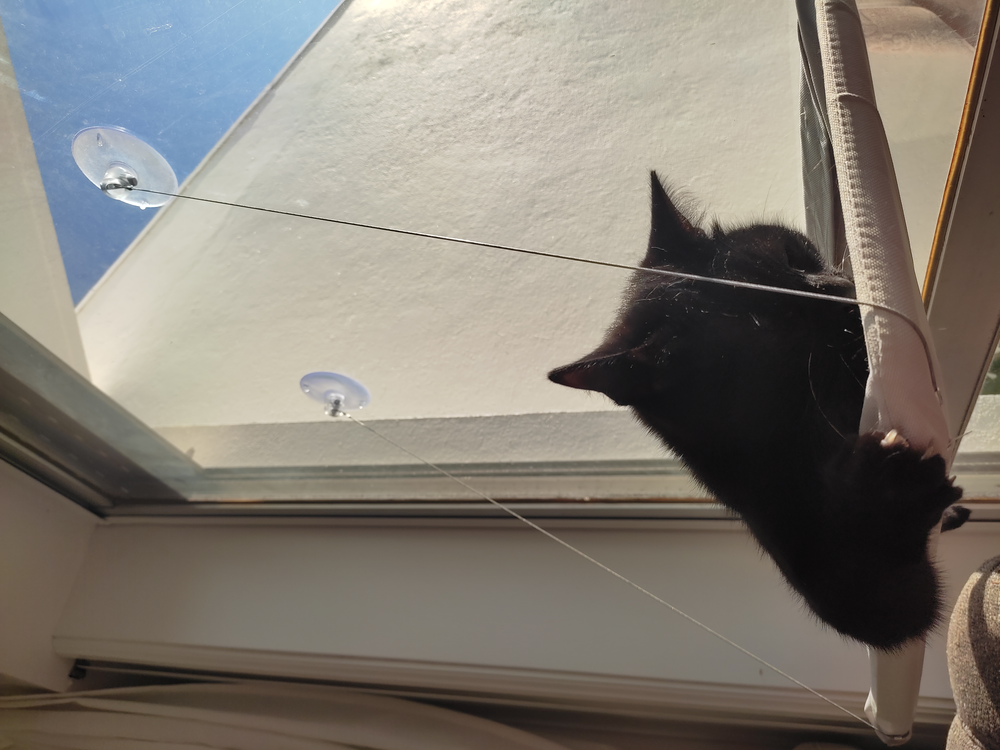
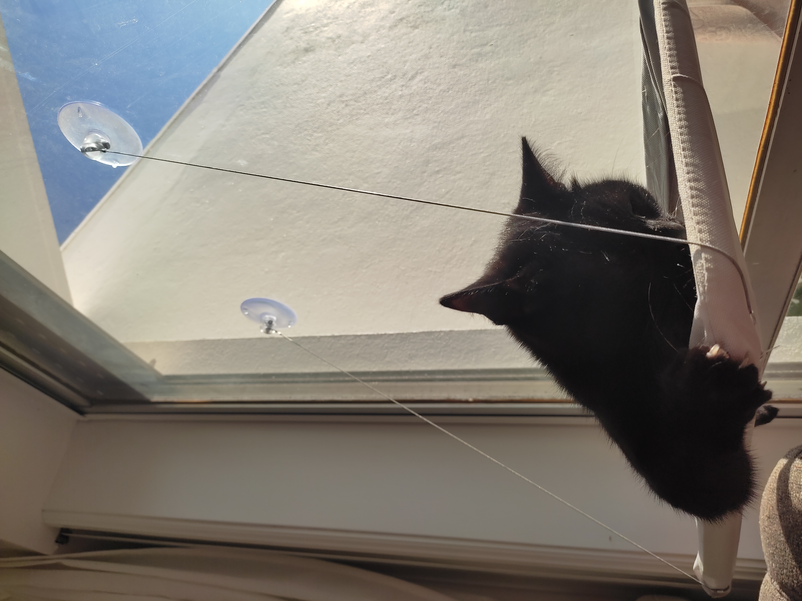

Olá,
Bem vindos!
Sou a Pretinha,
especialista em segurança doméstica
sua casa livre de insetos e pernilongos
Sobre
Olá humanos!
Eu sou a Pretinha, especialista em segurança doméstica e caçadora extraordinária.
Com 3 anos de experiência em proteger lares de insetos, pernilongos e qualquer outro invasor incômodo,
posso garantir que a sua casa estará em boas patas comigo.
Minha história começou de forma difícil: fui resgatada, ainda bebê, de uma lixeira junto com meus
irmãos. Éramos todos muito doentes, e eu fiquei cega de um olho, mas isso só me tornou mais
determinada! No orfanato de gatos, conheci o Lineu, meu amigo, irmão e mestre de artes marciais.
Ele era um guerreiro experiente, com anos de rua que o tornaram valente e sábio. Lineu me ensinou tudo
o que sei sobre caça e vigilância. Ele me preparou para ser a caçadora que sou hoje, sempre pronta
para manter minha casa segura e livre de ameaças.
O Lineu? Ah, ele foi convocado para novas missões em outros territórios.
Ele já era muito graduado e precisava levar suas habilidades para outros lares.
Mas não se preocupem, ele deixou um legado que mantenho com orgulho.
Hoje, moro com minha equipe humana — Bárbara, Melissa, Brenda e João Victor — no Porto, Portugal.
Eles são ótimos ajudantes e garantem que eu tenha energia para cumprir minhas funções.
Quando não estou caçando, gosto de vigiar a casa de lugares altos, treinando meus reflexos e
aperfeiçoando as técnicas que aprendi com meu querido mestre Lineu.
Se precisar de segurança de alta qualidade e livre de produtos químicos, conte comigo!
Sou a Pretinha, sua especialista em segurança doméstica. Vamos manter seu lar seguro,
limpo e cheio de amor. 💪🐾
Minhas atividades

 

Medalha de Bravura – Operação “Salto Noturno”
Por demonstrar coragem inigualável, habilidades táticas e um espírito resiliente em circunstâncias extremas, esta medalha é concedida à Operadora Felina Pretinha, especialista em segurança doméstica e caçadora extraordinária.
Durante a noite da Operação Salto Noturno, Pretinha, em missão de reconhecimento no perímetro da varanda, avistou e eliminou uma ameaça aérea (inseto), demonstrando precisão e instinto aguçados. No entanto, em uma manobra arriscada, ao garantir o sucesso da operação, ela executou um salto não autorizado, culminando em sua inserção acidental em território hostil: o quintal do vizinho, conhecido por abrigar dois cães de grande porte.
Apesar das condições adversas, Pretinha mostrou disciplina e autocontrole. Sob o manto da escuridão e com recursos limitados, ela permaneceu em posição tática, mantendo sua localização discreta e aguardando pela equipe de exfiltração. Demonstrando resiliência e foco, ela aceitou o envio aéreo de suprimentos (ração), mantendo-se alimentada e fortalecida até o amanhecer.
À primeira luz do dia, após horas de tensão, a equipe de resgate realizou a operação com sucesso, garantindo a segurança de Pretinha e preservando sua integridade física.
Histórico Classificado
Essa medalha soma-se a outras condecorações recebidas por Pretinha, operadora de missões secretas cujos detalhes permanecem classificados. Entre suas ações mais notáveis estão missões de patrulha, eliminação de invasores (insetos e pernilongos) e operações de segurança no perímetro doméstico.